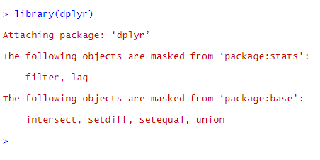

Chapter 5 Data Manipulation with dplyr
The previous chapter introduced ggplot2 which expanded our Base-R vocabulary to help us visualise our data easier.
Now, what if our dataset isn’t organised quite the way we want it to create a plot? Maybe it’s missing a column we need? Maybe missing values are encoded stragangely? Perhaps we need to standarise the units in a column?
We can use another package to solve these problems - dplyr! (Wickham, François, et al. 2019)
Like ggplot2, it adds more words to our R vocabulary and is focused on organising your data. dplyr is short for “data frame plier”. Data frames are an object type in R but we don’t think it is useful to discuss object types in this tutorial. data frames are essentially tables that stores your data in R.
5.1 Set Up for Session
Similarly to the previous chapter, it is assumed you have R Studio running and have installed ggplot2 and dplyr. If not, run the following code;
install.packages(c("ggplot2","dplyr"))We begin by loading dplyr and ggplot2.
library(dplyr)
library(ggplot2)When you load dplyr you will get a warning message;

Don’t worry!.
What it is saying is that dplyr has a few functions with the same name as built-in functions, so it will now use the ones from dplyr by default when these are called.
QUESTION: Can you match the interpretation of the error with what is written in the error message? Why do you think they haved used the phrase ‘masked’?
library(dplyr)
library(ggplot2)Let’s start by loading the miniIMDB dataset. This process is that same as described in the previous chapter but loading 04-miniImdb.RData instead of 03 Pulse.RData.
5.2 Description of Datasets Being Used
The “imdb” dataset has been built from the subsets of the Internet Movie Database made available for non-commercial purposes by the IMDb team: IMDB (2018)
It contains the following informations for all the entries having more than 500 votes, that are not of type “tvEpisodes” and for which information about year of release, running time and director(s) was available at the time of extraction (24/10/2018):
| Variable | Meaning |
|---|---|
| title | the popular title of the entry |
| type | type of the entry: movie short, tvMiniSeries, tvMovie, tvSeries, tvShort, tvSpecial, video or videoGame |
| year | the year of release or start of release for series |
| length | the duration of the running time in minutes |
| director | the director (or director appearing first in the list of directors) |
| birthYear | year of birth of director |
| NumVotes | number of votes for the entry |
| averageRating | IMDb’s weighted average rating for the entry |
As well as a list of logical (TRUE/FALSE) columns qualifying the genre of the entry:
| Genres |
|---|
| animation |
| action |
| adventure |
| comedy |
| documentary |
| fantasy |
| romance |
| sci_fi |
| thriller |
The “miniImdb” dataset is a small subset of “imdb”. It contains the following 5 first variables of “imdb” for the titles that have received more than 1 million votes:
| miniImdb |
|---|
| title |
| type |
| year |
| length |
| numVotes |
We will start by using the miniImdb dataset but we will later move to the full imdb dataset when we get more familiar with data manipulation.
5.3 Slicing, Filter and Select
We can use square brackets as a ‘quick’ way to get subsets of datasets (also called slicing) based on position;
DATASETNAME[ROW NUMBERS,COLUMN NUMBERS]
miniImdb[1,]## # A tibble: 1 x 5
## title type year length numVotes
## <chr> <fct> <dbl> <dbl> <int>
## 1 The Godfather movie 1972 175 1374861miniImdb[,1]## # A tibble: 29 x 1
## title
## <chr>
## 1 The Godfather
## 2 Star Wars: Episode IV - A New Hope
## 3 Star Wars: Episode V - The Empire Strikes Back
## 4 The Silence of the Lambs
## 5 Schindler's List
## 6 Forrest Gump
## 7 Pulp Fiction
## 8 The Shawshank Redemption
## 9 Se7en
## 10 The Lord of the Rings: The Fellowship of the Ring
## # ... with 19 more rowsminiImdb[1:5,1:2]## # A tibble: 5 x 2
## title type
## <chr> <fct>
## 1 The Godfather movie
## 2 Star Wars: Episode IV - A New Hope movie
## 3 Star Wars: Episode V - The Empire Strikes Back movie
## 4 The Silence of the Lambs movie
## 5 Schindler's List movieBut to get more useful subsets we would probably need to base these on characteristics or names rather than positions. We can use the filter() and select() functions for that from dplyr.
filter() helps you get the rows you are interested in
filter(miniImdb, type=="tvSeries")filter(miniImdb, year>2005)## # A tibble: 2 x 5
## title type year length numVotes
## <chr> <fct> <dbl> <dbl> <int>
## 1 Breaking Bad tvSeries 2008 49 1124817
## 2 Game of Thrones tvSeries 2011 57 1365039## # A tibble: 12 x 5
## title type year length numVotes
## <chr> <fct> <dbl> <dbl> <int>
## 1 Inglourious Basterds movie 2009 153 1069563
## 2 The Departed movie 2006 151 1031834
## 3 The Dark Knight movie 2008 152 1975810
## 4 The Prestige movie 2006 130 1020039
## 5 Avatar movie 2009 162 1005456
## 6 Interstellar movie 2014 169 1218930
## 7 The Avengers movie 2012 143 1129041
## 8 Breaking Bad tvSeries 2008 49 1124817
## 9 Game of Thrones tvSeries 2011 57 1365039
## 10 The Dark Knight Rises movie 2012 164 1335842
## 11 Inception movie 2010 148 1755897
## 12 Django Unchained movie 2012 165 1156987Whereas select helps you keep only the columns that you care about, by listing their names
select(miniImdb,title,year, numVotes)## # A tibble: 29 x 3
## title year numVotes
## <chr> <dbl> <int>
## 1 The Godfather 1972 1374861
## 2 Star Wars: Episode IV - A New Hope 1977 1078317
## 3 Star Wars: Episode V - The Empire Strikes Back 1980 1008039
## 4 The Silence of the Lambs 1991 1075970
## 5 Schindler's List 1993 1035642
## 6 Forrest Gump 1994 1527656
## 7 Pulp Fiction 1994 1566510
## 8 The Shawshank Redemption 1994 2006753
## 9 Se7en 1995 1226169
## 10 The Lord of the Rings: The Fellowship of the Ring 2001 1445423
## # ... with 19 more rowsor by going in sequence - from title to year for example
select(miniImdb,title:year)## # A tibble: 29 x 3
## title type year
## <chr> <fct> <dbl>
## 1 The Godfather movie 1972
## 2 Star Wars: Episode IV - A New Hope movie 1977
## 3 Star Wars: Episode V - The Empire Strikes Back movie 1980
## 4 The Silence of the Lambs movie 1991
## 5 Schindler's List movie 1993
## 6 Forrest Gump movie 1994
## 7 Pulp Fiction movie 1994
## 8 The Shawshank Redemption movie 1994
## 9 Se7en movie 1995
## 10 The Lord of the Rings: The Fellowship of the Ring movie 2001
## # ... with 19 more rowsSo in summary,
filter() works by subsetting rows from a dataset
select() works for subset of columns
QUESTION: Write the code that would give you all the entries that have been released before 2000
filter(miniImdb, ????)QUESTION: What would you do to only keep the columns title, length and numVotes from the miniImdb dataset
select(miniImdb,????)5.4 Creating new dataframe
All of these subsets so far have only produced temporary results printed into the console window. We usually subset data so that we can then do something with it later. One option is to assign the subset to a new dataframe with the arrow: “<-”. We will learn another way later.
recentEntries<-filter(miniImdb, year>2005)
recentEntries## # A tibble: 12 x 5
## title type year length numVotes
## <chr> <fct> <dbl> <dbl> <int>
## 1 Inglourious Basterds movie 2009 153 1069563
## 2 The Departed movie 2006 151 1031834
## 3 The Dark Knight movie 2008 152 1975810
## 4 The Prestige movie 2006 130 1020039
## 5 Avatar movie 2009 162 1005456
## 6 Interstellar movie 2014 169 1218930
## 7 The Avengers movie 2012 143 1129041
## 8 Breaking Bad tvSeries 2008 49 1124817
## 9 Game of Thrones tvSeries 2011 57 1365039
## 10 The Dark Knight Rises movie 2012 164 1335842
## 11 Inception movie 2010 148 1755897
## 12 Django Unchained movie 2012 165 1156987tvSeriesData<-filter(miniImdb, type=="tvSeries")
tvSeriesData## # A tibble: 2 x 5
## title type year length numVotes
## <chr> <fct> <dbl> <dbl> <int>
## 1 Breaking Bad tvSeries 2008 49 1124817
## 2 Game of Thrones tvSeries 2011 57 1365039Note the == sign to mean IS EQUAL TO
A single equals sign is an assignment statement: x=y “set x to be equal y”
A double equals sign is a question x==y “is x equal to y?”
within the filter() function the single = sign will return an error. Not all functions may be so friendly!
filter(miniImdb, type="tvSeries")## `type` (`type = "tvSeries"`) must not be named, do you need `==`?Remember R is case sensitive, and cannot do any association of meaning on its own
filter(miniImdb, type=="tv Series")## # A tibble: 0 x 5
## # ... with 5 variables: title <chr>, type <fct>, year <dbl>, length <dbl>,
## # numVotes <int>nothing
filter(miniImdb, type=="tvseries")## # A tibble: 0 x 5
## # ... with 5 variables: title <chr>, type <fct>, year <dbl>, length <dbl>,
## # numVotes <int>also nothing
filter(miniImdb, Type=="tvSeries")## Error: object 'Type' not foundstill nothing
We can also produce a subset of a subset:
titleVotesRecent<-select(recentEntries, title, numVotes)
titleVotesRecent## # A tibble: 12 x 2
## title numVotes
## <chr> <int>
## 1 Inglourious Basterds 1069563
## 2 The Departed 1031834
## 3 The Dark Knight 1975810
## 4 The Prestige 1020039
## 5 Avatar 1005456
## 6 Interstellar 1218930
## 7 The Avengers 1129041
## 8 Breaking Bad 1124817
## 9 Game of Thrones 1365039
## 10 The Dark Knight Rises 1335842
## 11 Inception 1755897
## 12 Django Unchained 1156987QUESTION: Produce a subset of the data for the type “movie” and assign it to an object called movies
??? <- filter(miniImdb, ????==????)
???QUESTION: Is there any movie who received more than 2 million votes?
filter(????, ????)5.5 Column Transformations
We can create new columns with the function mutate()
For example let’s try to convert the length of the entries in hour rather than in minutes
mutate(miniImdb, lengthInHour = length/60)## # A tibble: 29 x 6
## title type year length numVotes lengthInHour
## <chr> <fct> <dbl> <dbl> <int> <dbl>
## 1 The Godfather movie 1972 175 1374861 2.92
## 2 Star Wars: Episode IV - A New ~ movie 1977 121 1078317 2.02
## 3 Star Wars: Episode V - The Emp~ movie 1980 124 1008039 2.07
## 4 The Silence of the Lambs movie 1991 118 1075970 1.97
## 5 Schindler's List movie 1993 195 1035642 3.25
## 6 Forrest Gump movie 1994 142 1527656 2.37
## 7 Pulp Fiction movie 1994 154 1566510 2.57
## 8 The Shawshank Redemption movie 1994 142 2006753 2.37
## 9 Se7en movie 1995 127 1226169 2.12
## 10 The Lord of the Rings: The Fel~ movie 2001 178 1445423 2.97
## # ... with 19 more rowsThe usual signs that R uses to make calculations are:
| Symbol | Meaning |
|---|---|
* |
multiply |
/ |
divide |
+ |
add |
- |
substract |
** |
raise to the power |
QUESTION: Create a new dataframe adding a column giving the number of votes in million to miniImdb and show only the title and this newly created column
miniImdbMillion <- mutate(miniImdb, ???? = ????)
select(????, ????)5.6 More ways to filter
When we look at the full imdb dataset, it will be useful to know that we can use multiple conditions and additional fonctions to filter rows:
Here are the possible logical symbols to use when doing conditions in R:
| Code | Meaning |
|---|---|
| == | EQUALS |
| & | AND |
| ! | NOT |
| < | less than |
| > | more than |
And we can combine these together. On the “recentEntries” data let’s get all the entries with a length between 1h30 (90min) and 2h30 (150min)
filter(recentEntries,length>90 & length<150)## # A tibble: 3 x 5
## title type year length numVotes
## <chr> <fct> <dbl> <dbl> <int>
## 1 The Prestige movie 2006 130 1020039
## 2 The Avengers movie 2012 143 1129041
## 3 Inception movie 2010 148 1755897We can also use functions like max() or min() to help us with the filtering. For example, maybe we want to know which entrie’s length is the largest
filter(recentEntries,length==max(length))## # A tibble: 1 x 5
## title type year length numVotes
## <chr> <fct> <dbl> <dbl> <int>
## 1 Interstellar movie 2014 169 1218930Finally, going back to our very first examples, note that the function slice() is an alternative way to get specific rows by positions in a dataset. We will use it on the full imdb dataset
slice(recentEntries, 1)## # A tibble: 1 x 5
## title type year length numVotes
## <chr> <fct> <dbl> <dbl> <int>
## 1 Inglourious Basterds movie 2009 153 1069563slice(miniImdb, 1:5)## # A tibble: 5 x 5
## title type year length numVotes
## <chr> <fct> <dbl> <dbl> <int>
## 1 The Godfather movie 1972 175 1374861
## 2 Star Wars: Episode IV - A New Hope movie 1977 121 1078317
## 3 Star Wars: Episode V - The Empire Strikes Ba~ movie 1980 124 1008039
## 4 The Silence of the Lambs movie 1991 118 1075970
## 5 Schindler's List movie 1993 195 1035642QUESTION: Which movie has the oldest year of release among the movies of the miniImdb dataset?
filter(miniImdb,????)QUESTION: Which entry has the oldest year of release in the full imdb dataset?
filter(????,????)QUESTION: I’m trying to find out which movie has the oldest year of release in the full imdb dataset. Can you guess why this code doesn’t work? How should you modify it?
filter(imdb, type=="movie" & year==min(year))## # A tibble: 0 x 17
## # ... with 17 variables: title <chr>, type <fct>, year <dbl>,
## # length <dbl>, numVotes <int>, averageRating <dbl>, director <chr>,
## # birthYear <dbl>, animation <lgl>, action <lgl>, adventure <lgl>,
## # comedy <lgl>, documentary <lgl>, fantasy <lgl>, romance <lgl>,
## # sci_fi <lgl>, thriller <lgl>5.7 Aggregation/Grouping
The imdb dataset contains entries of various types, but we only saw entries of type movie and tvSeries so far, because the other types don’t have enough votes to be in the miniImdb dataset. So we will now use the full imdb dataset.
One thing that would be interesting is to get the entries with highest number of votes for each type of entry. You know how to do it for each type separately, by filtering on the specific type first:
short<-filter(imdb,type=="short")
filter(short, numVotes==max(numVotes))## # A tibble: 1 x 17
## title type year length numVotes averageRating director birthYear
## <chr> <fct> <dbl> <dbl> <int> <dbl> <chr> <dbl>
## 1 Kung~ short 2015 31 50331 8 David S~ NA
## # ... with 9 more variables: animation <lgl>, action <lgl>,
## # adventure <lgl>, comedy <lgl>, documentary <lgl>, fantasy <lgl>,
## # romance <lgl>, sci_fi <lgl>, thriller <lgl>But wouldn’t it be nice to do it for all types in a single move? We can do so using the function group_by() instead of filter() for the first step
imdb_type<-group_by(imdb,type)
filter(imdb_type, numVotes==max(numVotes))## # A tibble: 9 x 17
## # Groups: type [9]
## title type year length numVotes averageRating director birthYear
## <chr> <fct> <dbl> <dbl> <int> <dbl> <chr> <dbl>
## 1 Eddi~ tvSp~ 1983 69 13995 8.2 Bruce G~ NA
## 2 The ~ movie 1994 142 2006753 9.3 Frank D~ 1959
## 3 Band~ tvMi~ 2001 594 297551 9.5 David F~ 1959
## 4 The ~ video 2003 100 66405 7.4 Shin'ic~ NA
## 5 High~ tvMo~ 2006 98 70030 5.3 Kenny O~ 1950
## 6 Shre~ tvSh~ 2007 21 11025 6.5 Gary Tr~ 1960
## 7 Game~ tvSe~ 2011 57 1365039 9.5 Matt Sh~ 1975
## 8 Halo~ vide~ 2009 34 3077 7.6 Rich Wi~ NA
## 9 Kung~ short 2015 31 50331 8 David S~ NA
## # ... with 9 more variables: animation <lgl>, action <lgl>,
## # adventure <lgl>, comedy <lgl>, documentary <lgl>, fantasy <lgl>,
## # romance <lgl>, sci_fi <lgl>, thriller <lgl>QUESTION: Can you find out which title has the oldest release year for each type of entry?
imdb_type<-group_by(imdb,????)
filter(????, ????==????)5.8 Pipes
I’m a big sci-fi fan, and I see that none of the most voted entries are of this genre (see above). Let’s use filter to only keep the sci-fi entries:
imdbSciFi<-filter(imdb,sci_fi=="TRUE")
imdbSciFi_type<-group_by(imdbSciFi,type)
filter(imdbSciFi_type, numVotes==max(numVotes))## # A tibble: 7 x 17
## # Groups: type [7]
## title type year length numVotes averageRating director birthYear
## <chr> <fct> <dbl> <dbl> <int> <dbl> <chr> <dbl>
## 1 A Tr~ short 1902 13 36791 8.2 Georges~ 1861
## 2 Batt~ tvMo~ 2007 101 18920 7.7 Félix ~ 1951
## 3 Robo~ tvSh~ 2007 30 7134 8.2 Seth Gr~ 1974
## 4 Ince~ movie 2010 148 1755897 8.8 Christo~ 1970
## 5 Deat~ video 2010 100 27769 5.6 Roel Re~ 1969
## 6 The ~ tvSe~ 2010 44 755188 8.4 Lesli L~ NA
## 7 11.2~ tvMi~ 2016 60 56331 8.2 James S~ NA
## # ... with 9 more variables: animation <lgl>, action <lgl>,
## # adventure <lgl>, comedy <lgl>, documentary <lgl>, fantasy <lgl>,
## # romance <lgl>, sci_fi <lgl>, thriller <lgl>To get from the original data to this output we had to create a number of intermediate steps
imdb -> filter on sci-fi -> group_by type -> filter to max
We either need to explicitly save each of the steps as a dataeframe OR we can be clever and use pipes `%>%
imdb %>%
filter(sci_fi=="TRUE") %>%
group_by(type) %>%
filter(numVotes==max(numVotes))## # A tibble: 7 x 17
## # Groups: type [7]
## title type year length numVotes averageRating director birthYear
## <chr> <fct> <dbl> <dbl> <int> <dbl> <chr> <dbl>
## 1 A Tr~ short 1902 13 36791 8.2 Georges~ 1861
## 2 Batt~ tvMo~ 2007 101 18920 7.7 Félix ~ 1951
## 3 Robo~ tvSh~ 2007 30 7134 8.2 Seth Gr~ 1974
## 4 Ince~ movie 2010 148 1755897 8.8 Christo~ 1970
## 5 Deat~ video 2010 100 27769 5.6 Roel Re~ 1969
## 6 The ~ tvSe~ 2010 44 755188 8.4 Lesli L~ NA
## 7 11.2~ tvMi~ 2016 60 56331 8.2 James S~ NA
## # ... with 9 more variables: animation <lgl>, action <lgl>,
## # adventure <lgl>, comedy <lgl>, documentary <lgl>, fantasy <lgl>,
## # romance <lgl>, sci_fi <lgl>, thriller <lgl>With the piping system we start with the name of the data (imdb). This then gets carried through in each step - the data from the end of line 1 gets automatically used in line 2 and so on.
We do not need to call the dataframe name as the first option in the functions that we use
And we can easily add on extra functions. Select() might be useful to have a quicker look at all the information we are interested in.
imdb %>%
filter(sci_fi=="TRUE") %>%
group_by(type) %>%
filter(numVotes==max(numVotes)) %>%
select(title,type,averageRating,numVotes)## # A tibble: 7 x 4
## # Groups: type [7]
## title type averageRating numVotes
## <chr> <fct> <dbl> <int>
## 1 A Trip to the Moon short 8.2 36791
## 2 Battlestar Galactica: Razor tvMovie 7.7 18920
## 3 Robot Chicken: Star Wars tvShort 8.2 7134
## 4 Inception movie 8.8 1755897
## 5 Death Race 2 video 5.6 27769
## 6 The Walking Dead tvSeries 8.4 755188
## 7 11.22.63 tvMiniSeries 8.2 56331QUESTION: Can you find out for each type of entry, which is the best rated title using pipes?
imdb %>%
group_by(????) %>%
filter(????==????)5.9 The summarise() function
To know the average rating of all the movies, we could use the function summarize:
imdb %>%
filter(type=="movie") %>%
summarize(mean=mean(averageRating))## # A tibble: 1 x 1
## mean
## <dbl>
## 1 6.32But we can get lot’s of other summary information, like the number of entries, using the function n() the standard deviation of the ratings using the function sd() or the average number of votes
imdb %>%
filter(type=="movie") %>%
summarize(n=n(), meanRating=mean(averageRating), sdRating=sd(averageRating), meanVotes=mean(numVotes))## # A tibble: 1 x 4
## n meanRating sdRating meanVotes
## <int> <dbl> <dbl> <dbl>
## 1 39221 6.32 1.20 17775.And we can combine it with group_by to have these information for both the action and the non action movies
imdb %>%
filter(type=="movie") %>%
group_by(action) %>%
summarize(n=n(), meanRating=mean(averageRating), sdRating=sd(averageRating), meanVotes=mean(numVotes))## # A tibble: 2 x 5
## action n meanRating sdRating meanVotes
## <lgl> <int> <dbl> <dbl> <dbl>
## 1 FALSE 32811 6.39 1.17 14898.
## 2 TRUE 6410 5.97 1.31 32499.by the way, you can group by more than one variable
imdb %>%
filter(type=="movie") %>%
group_by(action, adventure, comedy, sci_fi) %>%
summarize(n = n(), meanRating=mean(averageRating), sdRating=sd(averageRating), meanVotes=mean(numVotes))## # A tibble: 15 x 8
## # Groups: action, adventure, comedy [8]
## action adventure comedy sci_fi n meanRating sdRating meanVotes
## <lgl> <lgl> <lgl> <lgl> <int> <dbl> <dbl> <dbl>
## 1 FALSE FALSE FALSE FALSE 18324 6.53 1.15 13353.
## 2 FALSE FALSE FALSE TRUE 1020 5.35 1.41 24846.
## 3 FALSE FALSE TRUE FALSE 10964 6.27 1.11 12320.
## 4 FALSE FALSE TRUE TRUE 256 5.64 1.25 14883.
## 5 FALSE TRUE FALSE FALSE 1264 6.49 1.10 27982.
## 6 FALSE TRUE FALSE TRUE 107 5.55 1.60 62676.
## 7 FALSE TRUE TRUE FALSE 850 6.27 1.16 41371.
## 8 FALSE TRUE TRUE TRUE 26 6.13 1.39 102517.
## 9 TRUE FALSE FALSE FALSE 3210 6.09 1.24 19461.
## 10 TRUE FALSE FALSE TRUE 430 5.11 1.43 44512.
## 11 TRUE FALSE TRUE FALSE 1058 6.03 1.15 17225.
## 12 TRUE FALSE TRUE TRUE 34 4.97 1.34 27008.
## 13 TRUE TRUE FALSE FALSE 1184 6.03 1.37 54860.
## 14 TRUE TRUE FALSE TRUE 172 5.86 1.48 180236.
## 15 TRUE TRUE TRUE FALSE 322 5.71 1.44 36063.``` ARRANGE, UNGROUP, SLICE INTRODUCED LATER Let’s see what’s the lowest rated combination of genres.
QUESTION: Can you find the lowest rated combination of genres from above? HINT: This can be done with arrange(), ungroup() and slice()
imdb %>%
filter(type=="movie") %>%
group_by(action, adventure, comedy, sci_fi) %>%
summarize(n = n(), meanRating=mean(averageRating), sdRating=sd(averageRating), meanVotes=mean(numVotes)) %>%
arrange(meanRating) %>%
ungroup() %>%
slice(1)## # A tibble: 1 x 8
## action adventure comedy sci_fi n meanRating sdRating meanVotes
## <lgl> <lgl> <lgl> <lgl> <int> <dbl> <dbl> <dbl>
## 1 TRUE FALSE TRUE TRUE 34 4.97 1.34 27008.Oh boy, you probably don’t want to watch an action/comedy/sc-fi movie that wouldn’t be of genre adventure!
QUESTION: Can you calculate for each year, the average length and rating of the released movies? Save the result in a dataframe
???? <- imdb %>%
filter(????) %>%
group_by(????) %>%
summarize(????)```
QUESTION: Would you manage to plot the average length of movies (as y) against the year of release (as x)?
ggplot(data = ????, aes(y=????, x=????)) +
geom_????5.10 Arranging
Ok what we probably want at this point is think about the movie we are going to watch tonight.
The best rated sci-fi movie is:
imdb %>%
filter(type=="movie" & sci_fi=="TRUE") %>%
filter(averageRating==max(averageRating))## # A tibble: 1 x 17
## title type year length numVotes averageRating director birthYear
## <chr> <fct> <dbl> <dbl> <int> <dbl> <chr> <dbl>
## 1 Ince~ movie 2010 148 1755897 8.8 Christo~ 1970
## # ... with 9 more variables: animation <lgl>, action <lgl>,
## # adventure <lgl>, comedy <lgl>, documentary <lgl>, fantasy <lgl>,
## # romance <lgl>, sci_fi <lgl>, thriller <lgl>But I already watched it
Maybe, I should check the first 10 sci-fi movies in the dataset using slice():
imdb %>%
filter(type=="movie" & sci_fi=="TRUE") %>%
slice(1:10)## # A tibble: 10 x 17
## title type year length numVotes averageRating director birthYear
## <chr> <fct> <dbl> <dbl> <int> <dbl> <chr> <dbl>
## 1 20,0~ movie 1916 105 1342 7 Stuart ~ 1883
## 2 Dr. ~ movie 1920 49 4148 7 John S.~ 1878
## 3 The ~ movie 1925 106 4015 7.1 Harry O~ 1885
## 4 Metr~ movie 1927 153 136815 8.3 Fritz L~ 1890
## 5 Fran~ movie 1931 70 56442 7.9 James W~ 1889
## 6 Dr. ~ movie 1931 98 10969 7.7 Rouben ~ 1897
## 7 The ~ movie 1932 68 2694 6.4 Charles~ 1900
## 8 The ~ movie 1933 71 24943 7.7 James W~ 1889
## 9 Isla~ movie 1932 70 6863 7.5 Erle C.~ 1896
## 10 King~ movie 1933 100 71884 7.9 Ernest ~ 1893
## # ... with 9 more variables: animation <lgl>, action <lgl>,
## # adventure <lgl>, comedy <lgl>, documentary <lgl>, fantasy <lgl>,
## # romance <lgl>, sci_fi <lgl>, thriller <lgl>We only get very old movies, because the dataset seems to be somewhat arranged by year of release. So before using slice(), we want to arrange the movies by rating using the function arrange():
imdb %>%
filter(type=="movie" & sci_fi=="TRUE") %>%
arrange(averageRating) %>%
slice(1:10)## # A tibble: 10 x 17
## title type year length numVotes averageRating director birthYear
## <chr> <fct> <dbl> <dbl> <int> <dbl> <chr> <dbl>
## 1 Brow~ movie 2015 98 712 1.2 Francis~ NA
## 2 Purge movie 2010 80 1131 1.4 David K~ NA
## 3 Nukie movie 1987 95 1021 1.5 Michael~ 1950
## 4 Star~ movie 2009 81 511 1.5 Jon Bon~ NA
## 5 Ultr~ movie 1990 81 676 1.6 Kevin T~ NA
## 6 Alie~ movie 2011 80 1523 1.6 Lewis S~ NA
## 7 Evil~ movie 2006 90 578 1.7 Jim Car~ NA
## 8 Univ~ movie 2007 85 1383 1.7 Griff F~ 1981
## 9 Atla~ movie 2018 86 503 1.7 Jared C~ NA
## 10 Turk~ movie 2006 110 14830 1.9 Kartal ~ 1938
## # ... with 9 more variables: animation <lgl>, action <lgl>,
## # adventure <lgl>, comedy <lgl>, documentary <lgl>, fantasy <lgl>,
## # romance <lgl>, sci_fi <lgl>, thriller <lgl>Look at the ratings! These are probably the worst movies ever. arrange() by default sorts in ascending order, so we need to arrange by descending order of rating:
imdb %>%
filter(type=="movie" & sci_fi=="TRUE") %>%
arrange(desc(averageRating)) %>%
slice(1:10)## # A tibble: 10 x 17
## title type year length numVotes averageRating director birthYear
## <chr> <fct> <dbl> <dbl> <int> <dbl> <chr> <dbl>
## 1 Ince~ movie 2010 148 1755897 8.8 Christo~ 1970
## 2 The ~ movie 1999 136 1439664 8.7 Lana Wa~ 1965
## 3 Inte~ movie 2014 169 1218930 8.6 Christo~ 1970
## 4 Alien movie 1979 116 684793 8.5 Ridley ~ 1937
## 5 Back~ movie 1985 116 888217 8.5 Robert ~ 1951
## 6 Term~ movie 1991 137 870521 8.5 James C~ 1954
## 7 The ~ movie 2006 130 1020039 8.5 Christo~ 1970
## 8 Alie~ movie 1986 137 579233 8.4 James C~ 1954
## 9 Lucia movie 2013 135 10022 8.4 Pawan K~ NA
## 10 Metr~ movie 1927 153 136815 8.3 Fritz L~ 1890
## # ... with 9 more variables: animation <lgl>, action <lgl>,
## # adventure <lgl>, comedy <lgl>, documentary <lgl>, fantasy <lgl>,
## # romance <lgl>, sci_fi <lgl>, thriller <lgl>That’s much better.
QUESTION: What are the 5 best rated thriller tvSeries having more than 10000 votes
imdb %>%
filter(????) %>%
arrange(????) %>%
slice(????)5.11 Summary
Key Functions learned:
filter()
select()
mutate()
group_by()
summarise()
arrange()
SUGGESTION: Write down in your own words what each of these functions does
Other concepts covered:
logical operators: ! | & ==
numerical operators: + - / *
pipes%>%
other useful functions: slice() max() min() n() mean() sd()
Lets combine all of these concepts together into a single piece of R code!:
imdb %>%
group_by(director) %>%
summarize(n=n(), meanRating=mean(averageRating), sumVotes=sum(numVotes), medianLength=median(length)) %>%
mutate(meanVotes=sumVotes/n) %>%
filter(n>10 & meanVotes>10000) %>%
arrange(desc(meanRating)) %>%
select(director, n, meanRating, medianLength)%>%
slice(1:10)## # A tibble: 10 x 4
## director n meanRating medianLength
## <chr> <int> <dbl> <dbl>
## 1 Christopher Nolan 12 8.09 124
## 2 Hayao Miyazaki 14 8 100.
## 3 Spike Jonze 11 7.8 28
## 4 Quentin Tarantino 12 7.79 145
## 5 David Fincher 12 7.72 128
## 6 Anurag Kashyap 14 7.67 136.
## 7 Akira Kurosawa 30 7.67 114.
## 8 S.S. Rajamouli 11 7.62 158
## 9 William Wyler 28 7.62 106
## 10 Krzysztof Kieslowski 16 7.61 95QUESTION: Write down what this code does
QUESTION: Which line could we remove by making a little modification inside the function summarize()?
QUESTION: Did you notice the use of the function median()? Why would one prefer to use the median rather than the mean?
BONUS CHALLENGE: Could you find among the movie entries, the 10 directors having directed their 5th movie at the youngest age? Who is the 9th one in the list? (hint: you may need to use a function that we haven’t seen yet: ungroup())
imdb %>%
filter(????) %>%
mutate(ageAtRelease=????) %>%
group_by(????) %>%
arrange(????) %>%
slice(????) %>%
ungroup() %>%
arrange(????) %>%
select(????) %>%
slice(????)References
IMDB. 2018. “IMDB.” https://www.imdb.com/interfaces/.
Wickham, Hadley, Romain François, Lionel Henry, and Kirill Müller. 2019. Dplyr: A Grammar of Data Manipulation. https://CRAN.R-project.org/package=dplyr.